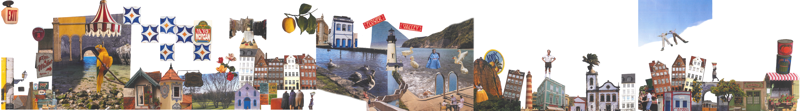
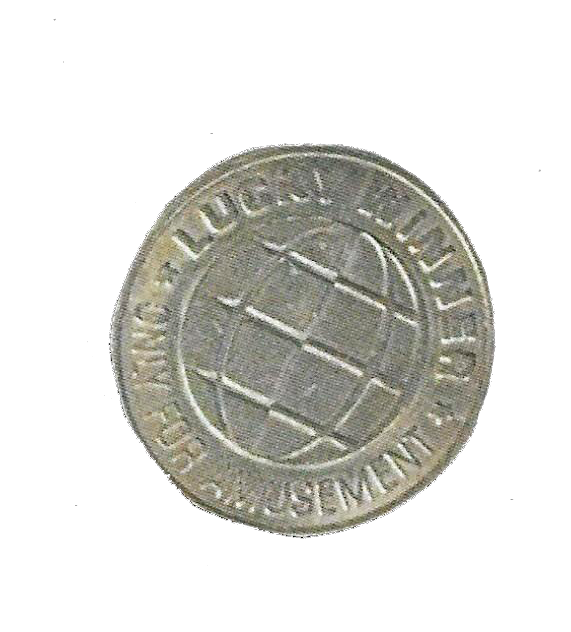
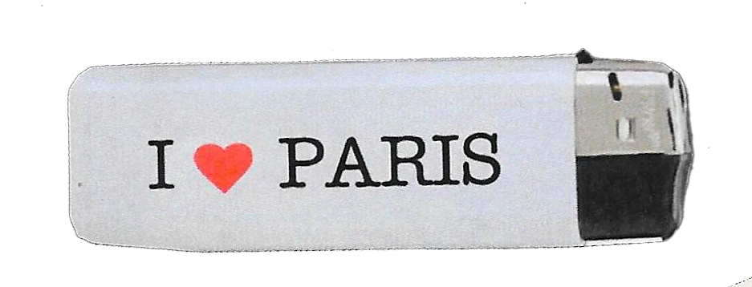
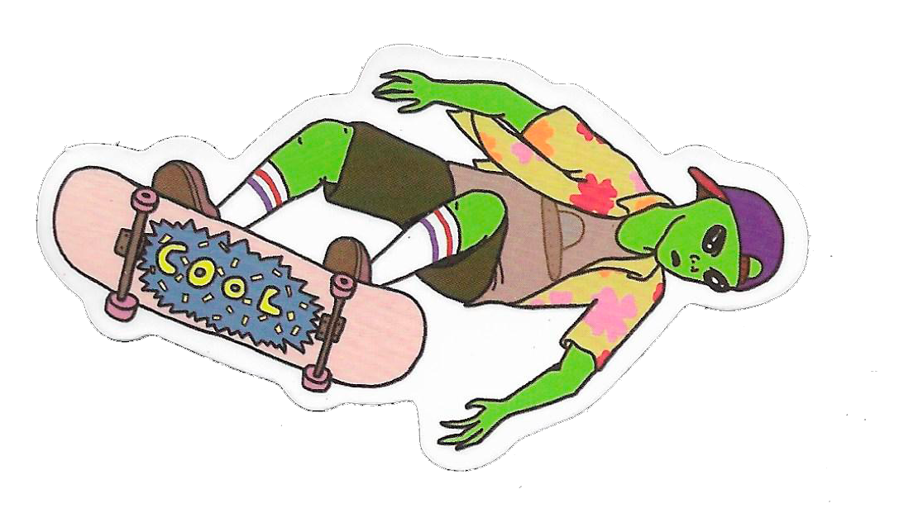
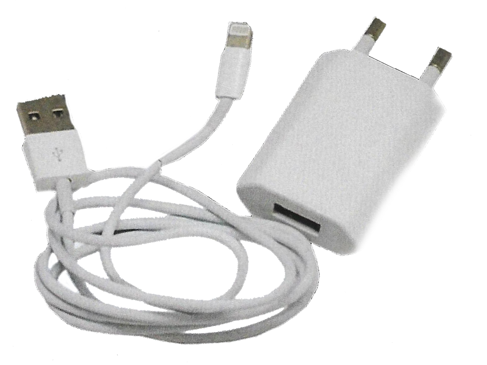

We're tired! Always forgotten, always being useless weight. We jumped
from his pocket when he sat down. Now we're scattered on the floor —
finally free from each other.

I'm white, worn, with an unstable flame. I've passed through too many
hands to count. He thinks he lost me. Maybe. Or maybe I just moved on,
like I always do.

I've been stuck to my own protective paper for years, with colors
intact and glue perfectly fresh, but completely invisible at the
bottom of a box. I was drawn to mark a position and bring life to a
surface, but my owner's perfectionism condemned me to the safety of a
dome, where I continue waiting for a perfect moment that may never
come.
I've been stuck to my own protective paper for years, with colors
intact and glue perfectly fresh, but completely invisible at the
bottom of a box. I was drawn to mark a position and bring life to a
surface, but my owner's perfectionism condemned me to the safety of a
dome, where I continue waiting for a perfect moment that may never
come.

Always twisted, always pulled by the cord. Never with care. I am white, simple, essential — but never valued.
This time I was left behind, coiled in some random outlet. Let's see how long she lasts without me.